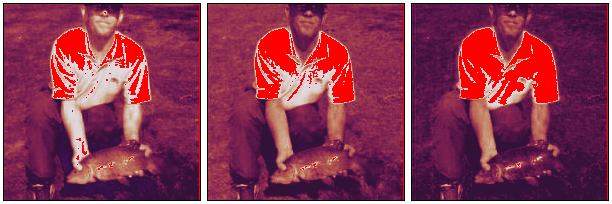
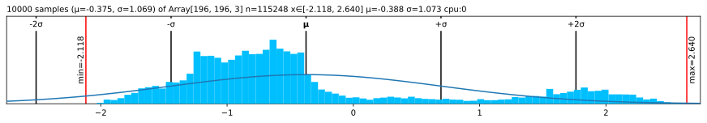
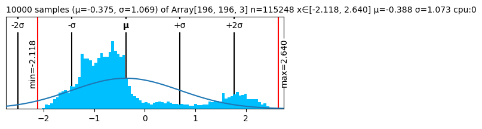

monkey_patch()🙈 Monkey-patching
monkey_patch
monkey_patch ()
image = jnp.load("mysteryman.npy").transpose(1,2,0)spicy = image[0,:12,0].copy()
spicy = (spicy .at[0].mul(10000)
.at[1].divide(10000)
.at[2].set(float('inf'))
.at[3].set(float('-inf'))
.at[4].set(float('nan'))
.reshape((2,6)))
spicyArray[2, 6] n=12 x∈[-3.541e+03, -3.369e-05] μ=-393.776 σ=1.113e+03 +Inf! -Inf! NaN! cpu:0
spicy.v # VerboseArray[2, 6] n=12 x∈[-3.541e+03, -3.369e-05] μ=-393.776 σ=1.113e+03 +Inf! -Inf! NaN! cpu:0 Array([[-3.5405432e+03, -3.3692955e-05, inf, -inf, nan, -4.0542859e-01], [-4.2255333e-01, -4.9105233e-01, -5.0817710e-01, -5.5955136e-01, -5.4242659e-01, -5.0817710e-01]], dtype=float32)
spicy.p # PlainArray([[-3.5405432e+03, -3.3692955e-05, inf, -inf,
nan, -4.0542859e-01],
[-4.2255333e-01, -4.9105233e-01, -5.0817710e-01, -5.5955136e-01,
-5.4242659e-01, -5.0817710e-01]], dtype=float32)image.deeperArray[196, 196, 3] n=115248 (0.4Mb) x∈[-2.118, 2.640] μ=-0.388 σ=1.073 cpu:0
Array[196, 3] n=588 x∈[-1.912, 2.411] μ=-0.728 σ=0.519 cpu:0
Array[196, 3] n=588 x∈[-1.861, 2.359] μ=-0.778 σ=0.450 cpu:0
Array[196, 3] n=588 x∈[-1.758, 2.379] μ=-0.838 σ=0.437 cpu:0
Array[196, 3] n=588 x∈[-1.656, 2.466] μ=-0.878 σ=0.415 cpu:0
Array[196, 3] n=588 x∈[-1.717, 2.448] μ=-0.882 σ=0.399 cpu:0
Array[196, 3] n=588 x∈[-1.717, 2.431] μ=-0.905 σ=0.408 cpu:0
Array[196, 3] n=588 x∈[-1.563, 2.448] μ=-0.859 σ=0.416 cpu:0
Array[196, 3] n=588 x∈[-1.475, 2.431] μ=-0.791 σ=0.463 cpu:0
Array[196, 3] n=588 x∈[-1.526, 2.429] μ=-0.759 σ=0.499 cpu:0
...dt = image[:3,:5,:3]
dt.deeper(3)Array[3, 5, 3] n=45 x∈[-1.316, -0.197] μ=-0.593 σ=0.302 cpu:0
Array[5, 3] n=15 x∈[-0.985, -0.197] μ=-0.491 σ=0.267 cpu:0
Array[3] x∈[-0.672, -0.197] μ=-0.408 σ=0.197 cpu:0 [-0.354, -0.197, -0.672]
Array[3] x∈[-0.985, -0.197] μ=-0.507 σ=0.343 cpu:0 [-0.337, -0.197, -0.985]
Array[3] x∈[-0.881, -0.303] μ=-0.530 σ=0.252 cpu:0 [-0.405, -0.303, -0.881]
Array[3] x∈[-0.776, -0.303] μ=-0.506 σ=0.199 cpu:0 [-0.440, -0.303, -0.776]
Array[3] x∈[-0.916, -0.215] μ=-0.506 σ=0.298 cpu:0 [-0.388, -0.215, -0.916]
Array[5, 3] n=15 x∈[-1.212, -0.232] μ=-0.609 σ=0.302 cpu:0
Array[3] x∈[-0.724, -0.250] μ=-0.460 σ=0.197 cpu:0 [-0.405, -0.250, -0.724]
Array[3] x∈[-1.072, -0.232] μ=-0.576 σ=0.360 cpu:0 [-0.423, -0.232, -1.072]
Array[3] x∈[-0.968, -0.338] μ=-0.599 σ=0.268 cpu:0 [-0.491, -0.338, -0.968]
Array[3] x∈[-0.968, -0.408] μ=-0.651 σ=0.235 cpu:0 [-0.577, -0.408, -0.968]
Array[3] x∈[-1.212, -0.408] μ=-0.761 σ=0.336 cpu:0 [-0.662, -0.408, -1.212]
Array[5, 3] n=15 x∈[-1.316, -0.285] μ=-0.677 σ=0.306 cpu:0
Array[3] x∈[-0.828, -0.303] μ=-0.535 σ=0.219 cpu:0 [-0.474, -0.303, -0.828]
Array[3] x∈[-1.125, -0.285] μ=-0.628 σ=0.360 cpu:0 [-0.474, -0.285, -1.125]
Array[3] x∈[-1.020, -0.390] μ=-0.651 σ=0.268 cpu:0 [-0.542, -0.390, -1.020]
Array[3] x∈[-1.003, -0.478] μ=-0.708 σ=0.219 cpu:0 [-0.645, -0.478, -1.003]
Array[3] x∈[-1.316, -0.513] μ=-0.865 σ=0.336 cpu:0 [-0.765, -0.513, -1.316]image.rgb
in_stats = ( (0.485, 0.456, 0.406), # mean
(0.229, 0.224, 0.225) ) # std
image.rgb(in_stats)
(image*0.3+0.5) # Slightly outside of [0, 1] rangeArray[196, 196, 3] n=115248 (0.4Mb) x∈[-0.135, 1.292] μ=0.384 σ=0.322 cpu:0(image*0.3+0.5).chans # shows clipping (bright blue/red)
image.plt
image.plt(center="mean")
fig, ax = plt.subplots(figsize=(6, 2))
plt.close(fig)
image.plt(ax=ax)
fig